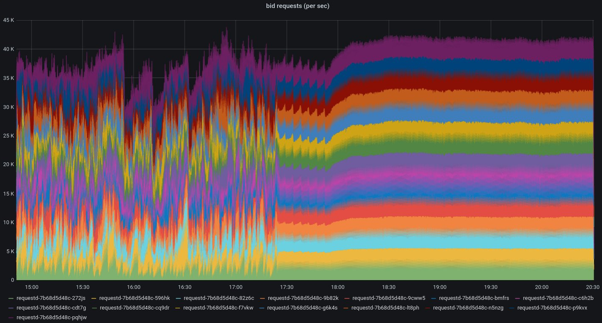

Aug 25, 2020
AWS ELB vs HAProxy
If you're using AWS as your cloud provider, the chances are you're using their defacto ELB service to manage load balancing. It's got a big list of pros: easy to configure; scalable; free SSL; seamless EC2 integration. With the only real con being the expensiveness of running at scale, especially in front of multi-zone, large data-transfering services - or so I thought.
ELBs are an effective and extremely reliable way of distributing load across your services. But after troubleshooting random drops in network connections and investigating drastically uneven requests per services, it was time to look at alternatives.
So after some extensive research and a little trial and error, I landed on HAProxy being the best alternative, as you can see from the migration graph below:
{kind=link}
Load balanced reqs/sec: AWS ELB (left) to HAProxy (right)
This is a service running an average of 40k reqs/sec over a 6 hour period, and as you can probably see, the first half of the graph is not evenly distributed at all. However, as soon as the migration to HAProxy beings, distribution looks dramatically better after just 30 minutes - to the point where this graph now almost only shows straight lines.
So, why the huge difference?
Well, in my experience, it all boils down to the fact that running your own HAProxy instances alongside your application services in the same VPC is almost always going to provide faster network speeds. Not only that, but the thorough customisation options available in HAProxy enable you to seriously fine-tune things such as: service health checks; load-balancing algorithms; rate limiting; and much more.
If you're running on Kubernetes, HAProxy also provide an Ingress Controller that communicates directly with the Kubernetes API to gather data on services and analyse the most efficient route for traffic. Not only will it use any custom health checks you may have configured, but it will also use livesness and readiness probes as an extra layer by default. The Ingress Controller significantly reduces the installation overhead and runs flawlessly on existing k8s infrastructure.
Another huge benefit to running HAProxy is the vast amount of instrumentation available by default. There are hundreds of real-time metrics made available in Prometheus format which allow you to closely monitor and alert on several factors.
So, what're the downsides?
Although I had little to no issues self-hosting HAProxy, using AWS managed ELBs is always going to be quicker and arguably less hassle.
As I mentioned earlier, ELBs work flawlessly alongside existing AWS infrastructure - but you pay highly for that privilege. So it's ultimately a decision of cost vs time.
Secondly, in some cases, running load-balancers outside of your own infrastructure provides greater reliability and higher availability if the need to divert traffic to another region arises. While this is also possible via HAProxy, the way in which you architect your infrastructure may be a little more complex.